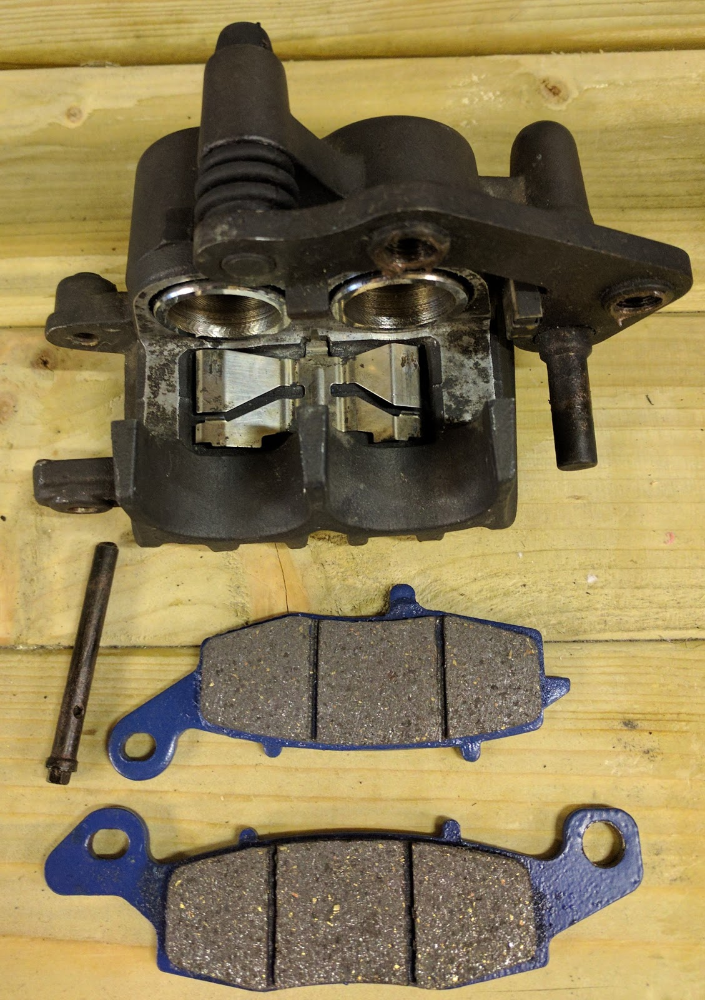
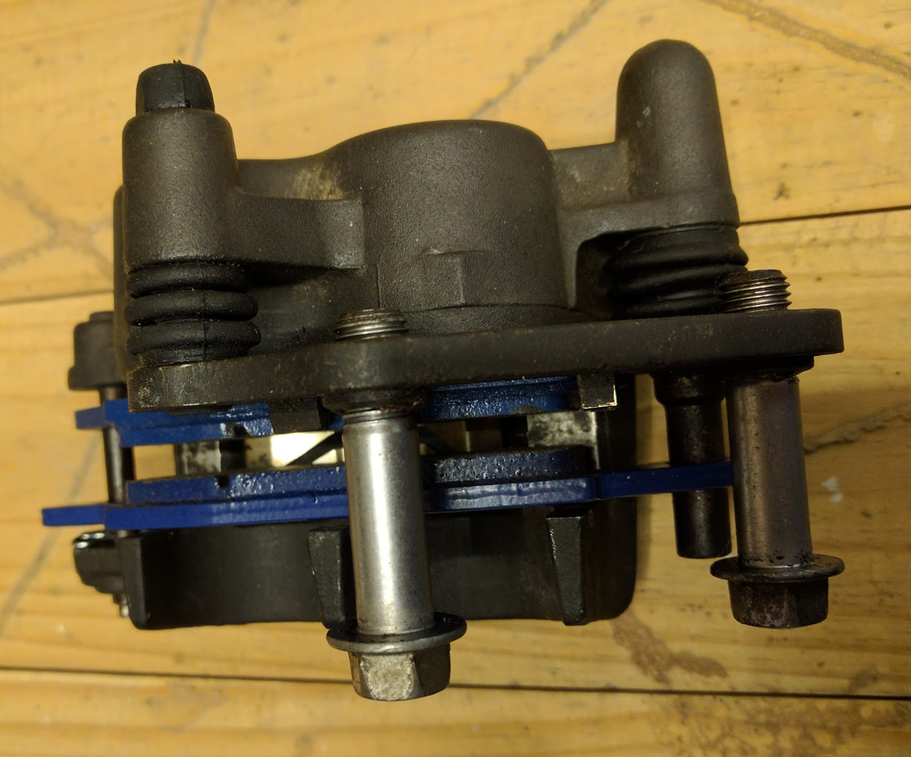

Project Z750 part 21
New Shiny Things :)
The caliper pistons, seals and stanchions have arrived. Now it’s getting a bit scary. I have to actually put things back together!
I’m confident that I can rebuild the brake calipers, but the fork stanchions are a much scarier job. I’ll have to somehow lift the front of the bike so that I can take the forks out. Of course, my friend had the bike lowered for herself, which means that I can’t easily get my bike lift under it.
So, I’ll have to use paddock stands to raise the front and back of the bike and then see if there is enough room to get the lift under it so that I can then remove the front paddock stand so that the fork legs are free.
in the meantime, I can rebuild the brake calipers. So I unpacked the rear brake piston, got some red rubber grease and smeared a very thin film of it over the surface of the piston. Yes, I know that you really don’t want grease anywhere near your brakes, but I knew that it would be scrapped off the piston by the oil seal and I would wipe away any excess.
Then I pressed the piston into its recess. it went in a little, but then stopped. I pressed and pressed but it wouldn’t go any further. I took it out and wiped off the grease in case it had built up to a point where it was stopping the piston going any further. then I placed it over the recess and tried again. it went over the dust seal easily enough, and then I pressed a bit more and it kind of “popped” over the oil seal and then I could push it home with little effort.
Next, I had a look at the front calipers and realised that I would need to wash one of them before I could put its seals in, but the other was ready to rock and roll.
so I gathered the new seals and pistons, grease, brake fluid and caliper body. putting the oil seals in was a bit fiddly as they kept wanting to twist and not go into their recesses straight, but after a little bit of fiddling, they went in. the dust seals then went in easily. I then rubbed a bit of brake fluid around the seals and walls of the piston recess and tried pushing one of the pistons in. it went passed the dust seal easily enough, but I could not get it to go any further. after a little while of pushing,
I took the piston out and examined the seals and realised that the oil seal was still a little bit twisted (hmmmm trying to emulate me ?), so I took the dust and oil seals out and very carefully put the oil seal back in. this time I made sure that it was all the way into it’s indentation and then put the dust seal in and smeared some brake fluid around the seals again. this time the piston went in all the way.
Onto the second piston. I was a bit more careful with the oil seal this time and made sure it was well seated. this time the piston slid in easily. I then put the greased the slider pins and put it into place.
The I went to put the brake pads onto the caliper. there are two pads, one on the piston side and one on the outside. I tried to put the piston side caliper in, but it didn’t want to seat properly, and was too high to fit under the slider (which is where it would normally sit).
I checked the other set of pads to see if they were different, but the pads for the left and right calipers are identical.
okay, what next.
after a lot of fiddling and trying brute force, I took the pad out and had a look at the spring clip that fits in the bottom of the caliper. it looked okay, but I took it out and turned it round.
I put the piston side pad in and low and behold, it fitted snugly, no force needed (I should have looked at that much earlier).
okay, onto the outside pad. Oh. Double Oh.
The outside pad has a hole on each end where the piston side pad only has a hole on one end. one of the holes (that both pads have) is for the pad retaining clip. the extra hold on the outside pad is supposed to fit over a pin on the slider. you can see it on the bottom right in this picture.

But it doesn’t. the hole is too small. I measured it and the hole is about 0.25mm too small. doesn’t sound like a lot, but it is the difference between the pad going onto the slider pin and not going on.
okay, looks like I’ve got the wrong pads.
But no, comparing the old and new pads, they are identical (well except for the size of the hole obviously). so what now ?
okay, out with the drill. attach a 9mm metal drill bit. clamp the pad onto the bench and drill the hole out. Then use a dremel to smooth the hole and it’s edges. and now it slides over nicely.
while I’m at it, I drill out the hole on the other caliper’s brake pad ready for when I put that caliper back together.

okay, now that the caliper is back together, I can reassemble the last caliper.